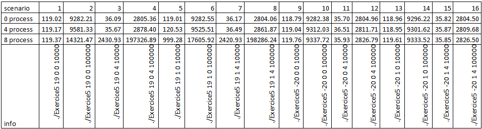
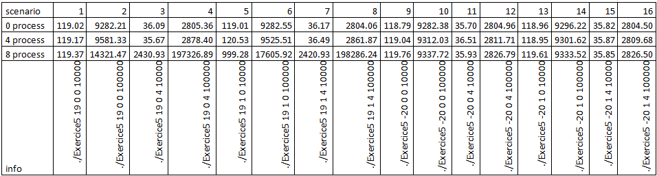

Schedulers¶
1. Mulit-process application¶
In this task, we modify the application made in the last lab in order to split it into two process.
Each process will have its own executable. So each process have ist own source file.The fist process, called pwm_master will read the button add pass the duty cycle selected to the second one using a named pipe. The second process, called pwm_slave will read from the named pipe and manage the GPIO output to create the PWM signal.
The first process will fork. The forked process (children) will just make a call to
create the second process by calling execlp() as shown bellow:
int child_fd = fork();
if (child_fd > 0)
{
// Master process code (parent)
...
}
else
{
// Forked (child) code
// Call the slave process that controls the fan
ret = execlp("./pwm_slave", "pwm_slave", NULL);
if(ret > 0)
{
perror("execlp()\n");
}
}
Both process tries to create the named pipe if it not exist:
int ret = mkfifo(FIFO_NAME, 0666);
if (ret)
{
perror("mkfifo()\n");
}
The master (parent) process then open it for writing:
int child_fd = fork();
if (child_fd > 0)
{
int fifo_fd = open(FIFO_NAME, O_WRONLY);
// parent process, will handle the button, passing the duty to the child
while(1)
{
...
}
}
While the slave (children) process open it for reading:
int fifo_fd = open(FIFO_NAME, O_RDONLY);
// child process, will handle the fan
while(1)
{
...
}
Note that the slave process can use select() to wait (block) on the named pipe for new data to come. Named pipe can be used like files, but are not written to disk.
Master process¶
Here after is the whole code of the master process:
/**
* Copyright 2015 University of Applied Sciences Western Switzerland / Fribourg
*
* Licensed under the Apache License, Version 2.0 (the "License");
* you may not use this file except in compliance with the License.
* You may obtain a copy of the License at
*
* http://www.apache.org/licenses/LICENSE-2.0
*
* Unless required by applicable law or agreed to in writing, software
* distributed under the License is distributed on an "AS IS" BASIS,
* WITHOUT WARRANTIES OR CONDITIONS OF ANY KIND, either express or implied.
* See the License for the specific language governing permissions and
* limitations under the License.
*
* Project: HEIA-FR / HES-SO MSE - MA-CSEL1 Laboratory
*
* Abstract: System programming - file system
*
* Purpose: ODROID-XU3 Lite silly fan control system
*
* Author: Wolfram Luithardt
* Date: 30.03.2016
*/
#include <sys/types.h>
#include <sys/stat.h>
#include <sys/timerfd.h>
#include <sys/select.h>
#include <fcntl.h>
#include <unistd.h>
#include <errno.h>
#include <time.h>
#include <string.h>
#include <stdlib.h>
#include <stdio.h>
#include <syslog.h>
/*
* pwm0 - gpb2.0 - 203
*/
#define GPIO_EXPORT "/sys/class/gpio/export"
#define GPIO_UNEXPORT "/sys/class/gpio/unexport"
#define SW_PREFIX "/sys/class/gpio/gpio"
#define SW1 "29"
#define SW2 "30"
#define SW3 "22"
#define PWM_INC 10
#define MAX(x, y) ((x>y)?x:y)
#define FIFO_NAME "/tmp/pwm_fifo"
static int open_switch(char* pin)
{
char buffer[32];
// unexport pin out of sysfs (reinitialization)
int f = open (GPIO_UNEXPORT, O_WRONLY);
if(f < 0)
{
perror("unexport");
exit(-1);
}
write (f, pin, strlen(pin));
close (f);
// export pin to sysfs
f = open (GPIO_EXPORT, O_WRONLY);
if(f < 0)
{
perror("export");
exit(-1);
}
write (f, pin, strlen(pin));
close (f);
// config pin as output
sprintf(buffer, "%s%s%s", SW_PREFIX, pin, "/direction");
//printf("writing to %s\n", buffer);
f = open (buffer, O_WRONLY);
if(f < 0)
{
perror("Setting pin as output");
exit(-1);
}
write (f, "in", strlen("in"));
close (f);
// Config pin for rising edge event
sprintf(buffer, "%s%s%s", SW_PREFIX, pin, "/edge");
//printf("writing to %s\n", buffer);
f = open (buffer, O_WRONLY);
write (f, "rising", strlen("rising"));
if(f < 0)
{
perror("event");
exit(-1);
}
close (f);
// open gpio value attribute
sprintf(buffer, "%s%s%s", SW_PREFIX, pin, "/value");
//printf("Opening %s\n", buffer);
f = open (buffer, O_RDWR);
if(f < 0)
{
perror("Open for reading");
exit(-1);
}
// Make sure the select will block
read(f, buffer, 10);
lseek(f, 0, SEEK_SET);
return f;
}
int main()
{
char dummy[64];
// Open the syslog
openlog("PWM control", LOG_PERROR, LOG_USER);
// Open the buttons
int sw1_fd = open_switch(SW1);
int sw2_fd = open_switch(SW2);
int sw3_fd = open_switch(SW3);
int duty_set = 50;
// compute the maximum fd number used
int max_fd = MAX(sw1_fd, sw2_fd);
max_fd = MAX(max_fd, sw3_fd);
fd_set fds_sw;
int ret = mkfifo(FIFO_NAME, 0666);
if (ret)
{
perror("mkfifo()\n");
}
int child_fd = fork();
if (child_fd > 0)
{
int fifo_fd = open(FIFO_NAME, O_WRONLY);
// parent process, will handle the button, passing the duty to the child
while(1)
{
FD_ZERO(&fds_sw);
FD_SET(sw1_fd, &fds_sw);
FD_SET(sw2_fd, &fds_sw);
FD_SET(sw3_fd, &fds_sw);
// Look if the timer thas overflows
ret = select(max_fd+1, NULL, NULL, &fds_sw, NULL);
// Manage errors
if (ret == -1)
{
perror("Selec()");
exit(-1);
}
else if (ret == 0)
{
perror("Timeout should not occure!");
exit(-1);
}
// Normal case
else
{
// Handle timer
if (FD_ISSET(sw1_fd, &fds_sw))
{
// Make sure the select will block
read(sw1_fd, dummy, 10);
lseek(sw1_fd, 0, SEEK_SET);
// Manage duty cycle
if (duty_set < 100)
duty_set += PWM_INC;
printf("Duty cyle is now %d\n", duty_set);
}
else if (FD_ISSET(sw2_fd, &fds_sw))
{
// Make sure the select will block
read(sw2_fd, dummy, 10);
lseek(sw2_fd, 0, SEEK_SET);
// Manage duty cycle
duty_set = 50;
printf("Duty cyle is now %d\n", duty_set);
}
else if (FD_ISSET(sw3_fd, &fds_sw))
{
// Make sure the select will block
read(sw3_fd, dummy, 10);
lseek(sw3_fd, 0, SEEK_SET);
// Manage duty cycle
if (duty_set > 0)
duty_set -= PWM_INC;
printf("Duty cyle is now %d\n", duty_set);
}
else
{
printf("Unkown fd set in select\n");
}
// Send new dutty to child process
ret = write(fifo_fd, &duty_set, sizeof(duty_set));
if(ret < 0)
{
perror("write()\n");
}
}
}
close(fifo_fd);
}
else
{
// Call the slave process that controls the fan
ret = execlp("./pwm_slave", "pwm_slave", NULL);
if(ret > 0)
{
perror("execlp()\n");
}
}
close(sw3_fd);
close(sw2_fd);
close(sw1_fd);
closelog();
return 0;
}
Slave process¶
Here after is the whole code of the slave process:
/**
* Copyright 2015 University of Applied Sciences Western Switzerland / Fribourg
*
* Licensed under the Apache License, Version 2.0 (the "License");
* you may not use this file except in compliance with the License.
* You may obtain a copy of the License at
*
* http://www.apache.org/licenses/LICENSE-2.0
*
* Unless required by applicable law or agreed to in writing, software
* distributed under the License is distributed on an "AS IS" BASIS,
* WITHOUT WARRANTIES OR CONDITIONS OF ANY KIND, either express or implied.
* See the License for the specific language governing permissions and
* limitations under the License.
*
* Project: HEIA-FR / HES-SO MSE - MA-CSEL1 Laboratory
*
* Abstract: System programming - file system
*
* Purpose: ODROID-XU3 Lite silly fan control system
*
* Author: Wolfram Luithardt
* Date: 30.03.2016
*/
#include <sys/types.h>
#include <sys/stat.h>
#include <sys/timerfd.h>
#include <sys/select.h>
#include <fcntl.h>
#include <unistd.h>
#include <errno.h>
#include <time.h>
#include <string.h>
#include <stdlib.h>
#include <stdio.h>
#include <syslog.h>
/*
* pwm0 - gpb2.0 - 203
*/
#define GPIO_EXPORT "/sys/class/gpio/export"
#define GPIO_UNEXPORT "/sys/class/gpio/unexport"
#define GPIO_PWM "/sys/class/gpio/gpio203"
#define PWM "203"
#define PWM_INC 10
#define PWM_NS_MULT 100000
#define MAX(x, y) ((x>y)?x:y)
#define SET_TIM(x, y) {\
x.it_interval.tv_sec=0;\
x.it_interval.tv_nsec=y;\
x.it_value.tv_sec=0;\
x.it_value.tv_nsec=y;}
#define FIFO_NAME "/tmp/pwm_fifo"
static int open_pwm()
{
// unexport pin out of sysfs (reinitialization)
int f = open (GPIO_UNEXPORT, O_WRONLY);
write (f, PWM, strlen(PWM));
close (f);
// export pin to sysfs
f = open (GPIO_EXPORT, O_WRONLY);
write (f, PWM, strlen(PWM));
close (f);
// config pin
f = open (GPIO_PWM "/direction", O_WRONLY);
write (f, "out", 3);
close (f);
// open gpio value attribute
f = open (GPIO_PWM "/value", O_RDWR);
return f;
}
int main()
{
char dummy[64];
// Open the syslog
openlog("PWM control", LOG_PERROR, LOG_USER);
printf("Slave starting\n");
int duty_set = 50;
int duty_current = 0;
// Set the driver
// Open PWM output
int pwm = open_pwm();
write(pwm, "1", sizeof("1"));
// Create the timer
int tim_fd = timerfd_create(CLOCK_REALTIME, 0);
struct itimerspec tim_dur;
SET_TIM(tim_dur, 100/PWM_INC * PWM_NS_MULT);
timerfd_settime(tim_fd, 0, &tim_dur, NULL);
fd_set fds_tim;
int ret = mkfifo(FIFO_NAME, 0666);
if (ret)
{
perror("mkfifo()\n");
}
int fifo_fd = open(FIFO_NAME, O_RDONLY);
// child process, will handle the fan
while(1)
{
FD_ZERO(&fds_tim);
FD_SET(tim_fd, &fds_tim);
FD_SET(fifo_fd, &fds_tim);
// Look if the timer thas overflows
ret = select(MAX(tim_fd, fifo_fd)+1, &fds_tim, NULL, NULL, NULL);
// Manage errors
if (ret == -1)
{
perror("Selec()");
exit(-1);
}
else if (ret == 0)
{
perror("Timeout should not occure!");
exit(-1);
}
// Normal case
else
{
// Handle timer
if (FD_ISSET(tim_fd, &fds_tim))
{
read(tim_fd, dummy, 10);
//printf("Timer!\n");
duty_current = (duty_current + PWM_INC) % 100;
// Toggle pin
if (duty_current < duty_set)
write(pwm, "1", sizeof("1"));
else
write(pwm, "0", sizeof("0"));
}
else if (FD_ISSET(fifo_fd, &fds_tim))
{
ret = read(fifo_fd, &duty_set, sizeof(duty_set));
printf("Slave:Got new duty %d\n", duty_set);
if(ret < 0)
{
perror("read()\n");
}
}
}
}
close(fifo_fd);
close(tim_fd);
close(pwm);
closelog();
return 0;
}
2. clock_gettime() resolution¶
Here is the resume of the following core inside the odroid from the /proc/cpuinfo command: Core 0 to 3 are same and core 5 to 7 are the same to (CPU variant and CPU part no equal)
# cat /proc/cpuinfo
processor : 0
model name : ARMv7 Processor rev 3 (v7l)
BogoMIPS : 48.00
Features : half thumb fastmult vfp edsp neon vfpv3 tls vfpv4 idiva idivt vfpd32 lpae
CPU implementer : 0x41
CPU architecture: 7
CPU variant : 0x0
CPU part : 0xc07
CPU revision : 3
processor : 4
model name : ARMv7 Processor rev 3 (v7l)
BogoMIPS : 48.00
Features : half thumb fastmult vfp edsp neon vfpv3 tls vfpv4 idiva idivt vfpd32 lpae
CPU implementer : 0x41
CPU architecture: 7
CPU variant : 0x2
CPU part : 0xc0f
CPU revision : 3
Hardware : SAMSUNG EXYNOS (Flattened Device Tree)
Revision : 0000
Serial : 0000000000000000
In this example I run the program on the first core of the processor only: The following image show the program running on the first core CPU0. This core is an ARM-cortexA7, with the following command, I can check the CPU version and type:
# cat /sys/devices/system/cpu/cpu0/uevent
OF_NAME=cpu
OF_FULLNAME=/cpus/cpu@0
OF_TYPE=cpu
OF_COMPATIBLE_0=arm,cortex-a7
OF_COMPATIBLE_N=1
The following part of code help to run a program on a specific core:
cpu_set_t my_set; // Define your cpu_set bit mask.
CPU_ZERO(&my_set); // Initialize it all to 0, i.e. no CPUs selected.
CPU_SET(4, &my_set); // set the bit that represents core 7.
sched_setaffinity(0, sizeof(cpu_set_t), &my_set); // Set affinity of this process
The histogram graph below, show the resolution of the first clock around 4000ns. With a real resolution of 42ns.
And then for the second type of CPU, I do the same test on the CPU4. This core is an ARM-cortexA15

For the histogram part, I found the same resolution. With the peak at 4125
And here is the result for the monotonic clock
Observations:
All of the previous clock resolutions are the same so I just check with the clock_getres function what the kernel says about. The result is the same resolution for all clock.
Small test with the clock_getres() function :
#include <time.h>
#include <stdio.h>
int main( int argc, char** argv )
{
clockid_t types[] = { CLOCK_REALTIME, CLOCK_MONOTONIC, CLOCK_PROCESS_CPUTIME_ID, CLOCK_THREAD_CPUTIME_ID, (clockid_t) - 1 };
struct timespec spec;
int i = 0;
for ( i; types[i] != (clockid_t) - 1; i++ ){
if ( clock_getres( types[i], &spec ) != 0 )
printf( "Timer %d not supported.\n", types[i] );
else
printf( "Timer: %d, Seconds: %ld Nanos: %ld\n", i, spec.tv_sec, spec.tv_nsec );
}
}
But the result is not quite well specific:
Timer: 0, Seconds: 0 Nanos: 1
Timer: 1, Seconds: 0 Nanos: 1
Timer: 2, Seconds: 0 Nanos: 1
Timer: 3, Seconds: 0 Nanos: 1
3. Prime number computation time¶
This function check the time passed in the checkNumbers() functions in [ms]:
int doJob(int min, int max)
{
struct timespec rt1, rt2;
long long time1;
clock_gettime(CLOCK_REALTIME, &rt1);
checkNumbers(min, max);
clock_gettime(CLOCK_REALTIME, &rt2);
time1 = (long long int)(rt2.tv_sec - rt1.tv_sec)*1000000000 + (rt2.tv_nsec - rt1.tv_nsec);
printf("%d %.3f\n", max, (double)(time1)/1000000);
}
Both line are tested with MIN_NUM = 1 and MAX_NUM = 49000. The main difference is that the blue one is made with the CPU0 and the orange, the program runs on the CPU4 (ARM-cortex A15 2GHz).
In this Graph we see that the fastest clock is the realtime. I try with the realtime_coarse, but really no visible change can be saw.
4. Assigning Process to cores¶
The distribution of the program over the processor. I start 2 program2, linux chose to run them on core 1 and 2:
With all the CPU used, we can reach 100 % over all the processor.
As in the exercise 3, yes we can put a program on a single or dedicated core
5. Condition of execution¶
This part was tested using one thread for the prim value check on a dedicated core and other process running on other core.
The program used to do this job can be pgrametrized:
param1 nice-value from -20 to 19
- param2 scheduler type:
-> 1 for CLOCK_REALTIME -> 2 for CLOCK_MONOTONIC
param3 chose specific core to run 0 to 7
param4 max number of prim value
Here is the result of some scenario:
In those scenario none other process using 100% CPU are started:
- Nice value set to 19, scheduler type on CLOCK_REALTIME, running on core0 and max number 10000
- Nice value set to 19, scheduler type on CLOCK_REALTIME, running on core0 and max number 100000
- Nice value set to 19, scheduler type on CLOCK_REALTIME, running on core4 and max number 10000
- Nice value set to 19, scheduler type on CLOCK_REALTIME, running on core4 and max number 100000
- Nice value set to 19, scheduler type on CLOCK_MONOTONIC, running on core0 and max number 10000
- Nice value set to 19, scheduler type on CLOCK_MONOTONIC, running on core0 and max number 100000
- Nice value set to 19, scheduler type on CLOCK_MONOTONIC, running on core4 and max number 10000
- Nice value set to 19, scheduler type on CLOCK_MONOTONIC, running on core4 and max number 100000
- Nice value set to -20, scheduler type on CLOCK_REALTIME, running on core0 and max number 10000
- Nice value set to -20, scheduler type on CLOCK_REALTIME, running on core0 and max number 100000
- Nice value set to -20, scheduler type on CLOCK_REALTIME, running on core4 and max number 10000
- Nice value set to -20, scheduler type on CLOCK_REALTIME, running on core4 and max number 100000
- Nice value set to -20, scheduler type on CLOCK_MONOTONIC, running on core0 and max number 10000
- Nice value set to -20, scheduler type on CLOCK_MONOTONIC, running on core0 and max number 100000
- Nice value set to -20, scheduler type on CLOCK_MONOTONIC, running on core4 and max number 10000
- Nice value set to -20, scheduler type on CLOCK_MONOTONIC, running on core4 and max number 100000
Same as above but with 4 and 8 dummy process (/dev/null) running on CPU 2-3-5 and 7 (4) and all for core for 8 process. See the following graph and table for the result and discussion.
The above scenario run from a bash file that execute all the 16 scenario in a row and save the time passed to do the job:
echo "./Exercice5 19 0 0 10000" > exercice5.log
./Exercice5 19 0 0 10000 >> exercice5.log
echo "./Exercice5 19 0 0 100000" >> exercice5.log
./Exercice5 19 0 0 100000 >> exercice5.log
echo "./Exercice5 19 0 4 10000" >> exercice5.log
./Exercice5 19 0 4 10000 >> exercice5.log
echo "./Exercice5 19 0 4 100000" >> exercice5.log
./Exercice5 19 0 4 100000 >> exercice5.log
echo "./Exercice5 19 1 0 10000" >> exercice5.log
./Exercice5 19 1 0 10000 >> exercice5.log
echo "./Exercice5 19 1 0 100000" >> exercice5.log
./Exercice5 19 1 0 100000 >> exercice5.log
echo "./Exercice5 19 1 4 10000" >> exercice5.log
./Exercice5 19 1 4 10000 >> exercice5.log
echo "./Exercice5 19 1 4 100000" >> exercice5.log
./Exercice5 19 1 4 100000 >> exercice5.log
echo "./Exercice5 -20 0 0 10000" >> exercice5.log
./Exercice5 -20 0 0 10000 >> exercice5.log
echo "./Exercice5 -20 0 0 100000" >> exercice5.log
./Exercice5 -20 0 0 100000 >> exercice5.log
echo "./Exercice5 -20 0 4 10000" >> exercice5.log
./Exercice5 -20 0 4 10000 >> exercice5.log
echo "./Exercice5 -20 0 4 100000" >> exercice5.log
./Exercice5 -20 0 4 100000 >> exercice5.log
echo "./Exercice5 -20 1 0 10000" >> exercice5.log
./Exercice5 -20 1 0 10000 >> exercice5.log
echo "./Exercice5 -20 1 0 100000" >> exercice5.log
./Exercice5 -20 1 0 100000 >> exercice5.log
echo "./Exercice5 -20 1 4 10000" >> exercice5.log
./Exercice5 -20 1 4 10000 >> exercice5.log
echo "./Exercice5 -20 1 4 100000" >> exercice5.log
./Exercice5 -20 1 4 100000 >> exercice5.log
And for the code that do the job, I create a function doJob to check the prim number, this function can be running in some different thread:
void* doJob(void* param)
{
struct timespec rt1, rt2;
long long time1;
val *v = (val*)param;
clock_gettime(v->types, &rt1);
checkNumbers(v->min, v->max);
clock_gettime(v->types, &rt2);
time1 = (long long int)(rt2.tv_sec - rt1.tv_sec)*1000000000 + (rt2.tv_nsec - rt1.tv_nsec);
printf("%d %.3f\n", v->thread, (double)(time1)/1000000); //ms
return NULL;
}
This function take a val struct that hold a variable the thread id, min and max data to check prim number and the type of source time to take.
And the main function that take param and configure the program to run these scenario:
int main(int argc, char *argv[])
{
if(argc != 5){ //6 with thread usage
usage();
return 1;
}
int vnice = atoi(argv[1]);
int tscheduler = atoi(argv[2]);
int tcore = atoi(argv[3]);
int mprim = atoi(argv[4]);
//set priority, nice value
if(setpriority(PRIO_PROCESS, 0, vnice)==-1) //0->current process
return 0;
clockid_t types[] = { CLOCK_REALTIME, CLOCK_MONOTONIC, CLOCK_PROCESS_CPUTIME_ID, CLOCK_THREAD_CPUTIME_ID, (clockid_t) - 1 };
//###### single thread Ex4 with other process
cpu_set_t my_set;
CPU_ZERO(&my_set);
CPU_SET(tcore, &my_set);
sched_setaffinity(0, sizeof(cpu_set_t), &my_set); //set using current core
val v;
v.min = 0; //start from min value
v.max = mprim; //max prim value to reach in the checkNumber function
v.thread = 1; //this is useless with a single thread
v.types = tscheduler; //configure for the correct scheduler type to use
doJob(&v);
return 0;
}
This function take 4 parameters have seen before and setup the program to run those scenario.
 

Discussion:
- From the graph, we see that the nice value does is job, because in the right side of the graph all the column are pretty much the same high in contrary at the left side.
- We can see in the left side some differences between 0_process (blue) and 4_process (orange) scenarios that its hardly differentiate in the right side, its due of the nice value that eliminate this effect in the right side.
- Running on the core4 is much faster than running on the core0 because core4 is a faster core than core0
Some other test could be tested:
Using more thread, try with fork to create a child, optimize the code using a more efficiency algorithm, try the compilation optimization,…